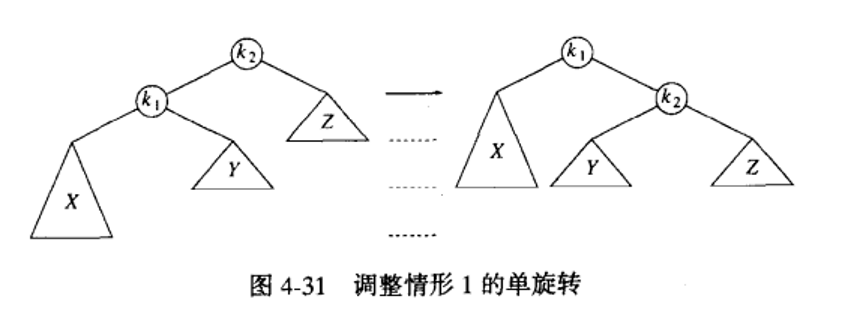
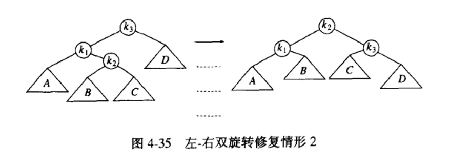
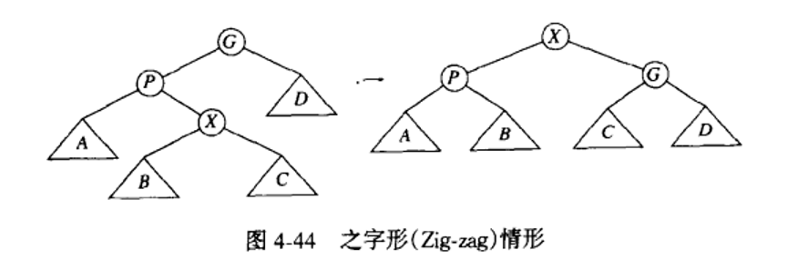
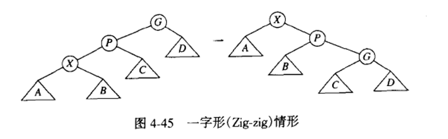
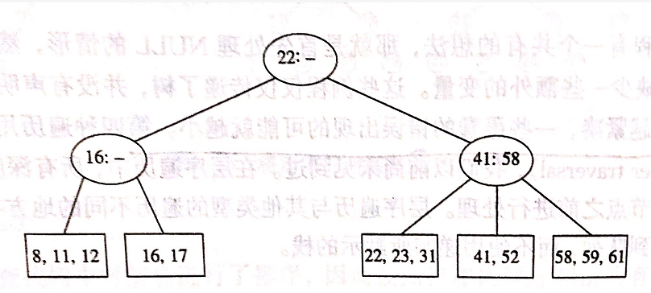

1. 树的递归定义
树为节点集合，若节点非空，则有由一个根节点和0个或多个非空的（子）树组成，每个子树的根都被来自根r的一条有向边所连接。
树叶、兄弟、父亲、祖先、后裔
路径：从节点n1到nk的path定义为节点n1,n2,n3,…,nk的一个序列：使得1<=i<k，ni是ni+1的父亲；路径长为边数目，即k-1
深度：根到ni的唯一路径的长，（根的深度为0）
高度：ni到一片树叶的最长路径的长。所有树叶高度为0，一棵树的高等于根的高
内部路径长：所有节点的深度。
2. 遍历二叉树（traversal）
2.1. BFS，队列
按层：往往要求获取层数信息（维护两个last变量，一个指向当前层，一个指向下一层）
https://leetcode.com/problems/binary-tree-level-order-traversal
2.2. DFS，栈
递归的函数上下文栈，或者循环+栈。递归简单清晰，应练习非递归的循环遍历方法
先序遍历(pre-order)：遍历顺序：节点->左儿子（子树）->右儿子（子树）
中序遍历(in-order)：左儿子（子树）->节点->右儿子（子树）
- 有意思的是，将N个点插入到二叉查找树，再执行中序遍历输出N个点的排序结果。（从中序遍历和二叉查找树的定义可理解，复杂度为）
- https://leetcode.com/problems/binary-tree-inorder-traversal/
后序遍历(post-order)：左儿子（子树）->右儿子（子树）->节点
（先序）序列化：
- 加入空字符#、结束字符！
反序列化：
由输入字符串->vector
"12!3!#!#!#!" -> ["12","3","#","#","#"]
3. 二叉查找树：Binary search tree
定义：每个节点都有其关键字值，对于树中每个节点X，其左子树中所有节点关键字值都小于X的，右子树所有节点的关键字值都大于X的。
- 树的任意点期望深度为，平均操作【insert, find, findmin, findmax, delete】复杂度为。
- 删除操作会破坏这种平均特性，由于删除时，把右子树的最小节点代替原节点，有助于使得左子树比右子树更深。
- 已证明，交替插入删除次，期望深度将为。
- 可通过交替选取右子树最小、左子树最大元素来代替被删节点来消除。
- 若向预先排序的树输入数据，一连串insert花费二次时间，链表实现代价很大，树由那些没有左儿子的节点组成。
解决方法：附加条件“平衡”
3.1. AVL树
带平衡条件的二叉查找树，保证树深度为
定义：每个节点的左子树和右子树的高度最多差1的二叉查找树。（空树高度为-1）
插入可能破坏条件，通过“旋转”来修正。插入之后，只有插入点到根节点的平衡可能被改变（只有这些节点的子树可能发生改变），沿此路径上行并更新平衡信息。
3.1.1. 旋转操作：
找出第一个破坏AVL条件的节点α（最深的节点），并重新平衡。
四种情况（WHY？，α的左右子树高度差4，若插在左/右儿子则高度差不可能为2，α不可能为第一个破坏点）：
- 对α的左儿子的左子树插入
- 对α的左儿子的右子树插入
- 对α的右儿子的左子树插入（与2.对称）
- 对α的右儿子的右子树插入（与1.对称）
通过单旋转、双旋转来解决。实现可递归定义插入、左/右的单/双旋转。
3.1.2. 单旋转（左-左/右-右）

3.1.3. 双旋转（左-右/右-左）

3.2. 伸展树（Splay Tree）
放弃平衡条件，允许任意深度，但每次操作之后调整；
连续M次操作平均最坏情况，无法保证任意一次操作花费的可能。
对于二叉查找树最坏情况 ，若要求最差情况则节点被访问之后必须被移动，否则一直访问最坏节点则有
基本想法：当一个节点被访问后，经过一系列AVL树的旋转被构造到根节点。若该点很深，则路径上的许多存在节点也相对比较深，重新构造可以使得对这些节点的访问时间变少。（实际上，一个节点被访问之后，可能不久再次被访问）
不保留高度或平衡信息
3.2.1. 平衡方法
直接单旋转，对最坏情况复杂度为 ，因此不可行。
展开操作：为目标节点，若其父为根节点，直接单旋转。否则分为以下情况
3.2.2. 之字形（Zig-zag），即采用AVL的双旋转

3.2.3. 一字型（Zig-zig）

4. B-Tree
定义：B-树是平衡M-路树；对于阶为的B-树，有如下
- 树的根，或为叶子节点，或有到个儿子
- 除了根以外，所有非叶子节点（内部节点）的儿子数在和之间。
- 所有树叶在相同深度上，所有的数据都存储在树叶上。（数据本身，或指向数据的指针）
在每一个内部节点上，有如下：
- 指针：指向该节点的各个儿子（子树），,,,...,
- 内部信息：分别代表子树, ,...,中发现的最小关键字的值，,,,...,。（第一个子树由于在最左侧，没有比它更小的子树，因此不需要存储它的最小关键字值）
4.1. 例：3阶B-树（又称为2-3树）

图例：椭圆为内部节点，椭圆内的数表示内部信息（子树的最小关键字值）。方框为树叶，其中数字表示关键字的值（此处为数据）。
由于最左侧的子树的最小关键字值是不需要存储的，有n个儿子的情况下只需存储n-1个值。因为是3阶的B-树，对于三个儿子的情况需要存储2个内部信息值（见节点41:58），对于2个儿子则只需要存储一个信息值（见16:-和22:-）。
4.2. 插入
对于尚未见过的关键字值执行Insert，先按Find找到一片树叶，插入到该位置。若插入后破坏了B-树性质（树叶包含数据超过），则执行“分裂”，向上一层增加一个节点（若上一层增加后又破坏B-树的性质，则递归向上分裂）。此外，也可以不执行“分裂”，如向上图插入70，可以移动58到左侧树叶。
需要注意，插入时只有访问路径上的内部节点才有可能变化。
4.3. 复杂度
深度最多为
对于路径上每一个节点，要执行时间的工作来确定分支路线（二分查找）
Insert和delete可能还需要的工作量来更新调整节点上的所有信息，因此最坏情况为，不过一次Find只花费 时间
4.4. 应用：数据库系统
- 树存于物理磁盘而非内存。
- 磁盘访问次数为， 虽然要花费时间来确定分支，但仍比读存储器快得多。
- 每个节点更新花费操作时间，这些花费一般不大（WHY？）
- 值一般选择为，使得一个内部节点能够装入一个磁盘区块的最大值。
- 存储在一片树叶上的元素的最大个数时，要使得树叶是满的那么它就装满一个区块。